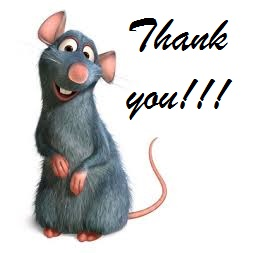

This application has a lot potential for future development. Some of the features, I feel that are important are:
I would like to thank Prof. Jose Annunziato for making the course so interesting and providing so many practical examples during lectures.
Today, I feel more confident in developing Web Applications. I would also like to thank the TA, Rishi Katyal for providing contructive comments on my work.
